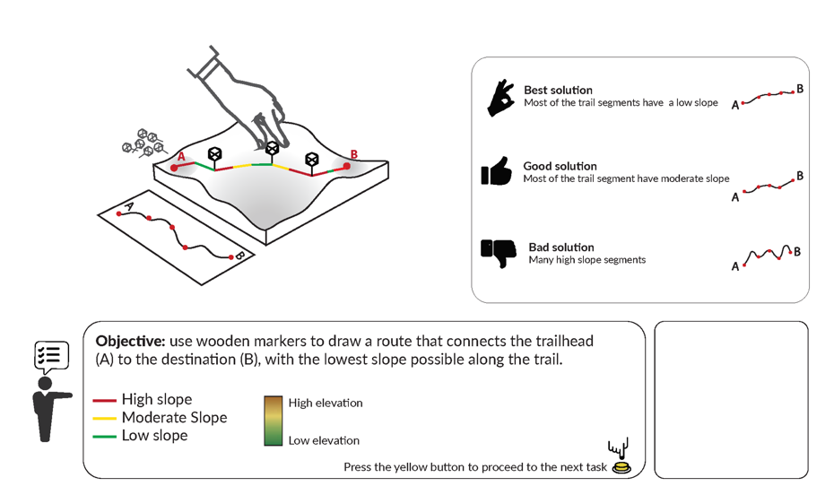

Day 2: Trail Planning
Activity Objectives
- Use wooden markers to draw a route that connects the trailhead to the destination, with the lowest slope possible along the trail.
Activity Instructions
Students will be assigned to plan a low-intensity hiking route in the Smoky Mountains meant for seniors and children. The objective of this task is to design a route that connects the trailhead to the destination, with the lowest slope possible along the trail to make it easy for walking.
Resources
Activity Objectives

Trail Planning Activity
Geospatial Concepts

Geospatial Concepts Covered by Trail Planning Activity